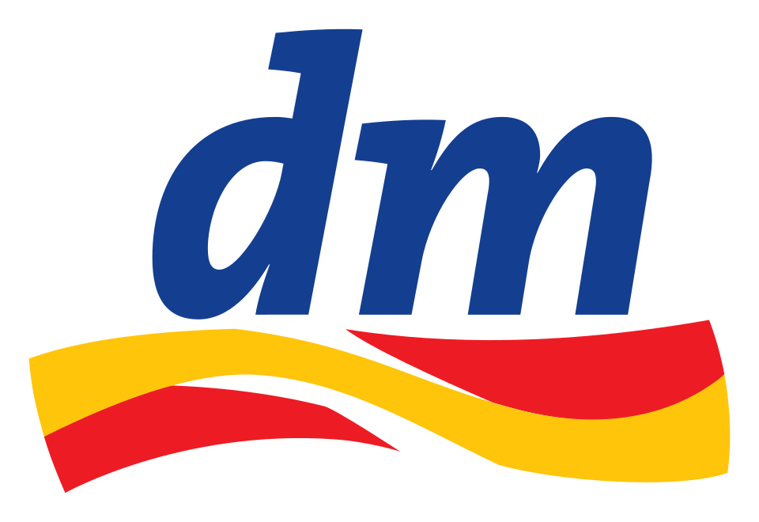
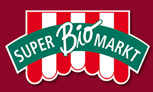
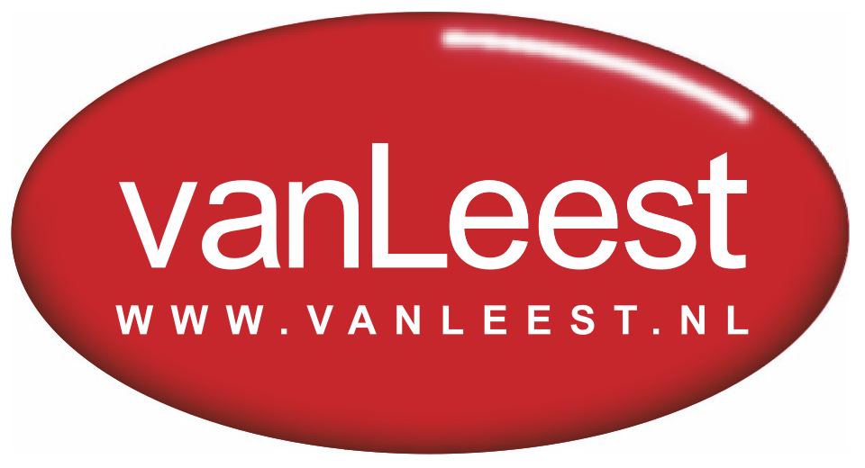
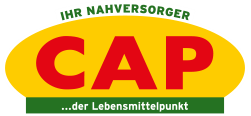

홈 > 브랜드 매거진 > 디엠-드로게리 마크트
디엠-드로게리 마크트
데엠(dm-drogerie markt)은 화장품·헬스케어·생활용품을 판매하는 독일 최대 드럭스토어 소매 체인이다.
산업 분야 리테일·커머스 · 공개 등급 자료 기반 · 브랜드 평가 4.1 ★

한눈에 보는 브랜드
데엠(dm-drogerie markt)은 독일 카를스루에에 본사를 둔 유럽 최대 규모의 드러그스토어 체인이다. 1973년 괴츠 베르너가 의약외품 가격유지제 폐지를 계기로 첫 매장을 열며 출발했다.
첫 전환점은 1970년대 후반 합리적 가격에 전문 상담을 결합한 셀프서비스 모델의 정착이고, 두 번째는 2000년 새 비주얼 아이덴티티 도입과 함께 진행된 유럽 다국적 확장이다. 현재 약 12~14개 유럽 국가에서 4천여 개 매장과 약 7만9천여 명의 인력을 운영하며 연간 총매출 약 192억 유로 규모에 이른다.
브랜드 관점
데엠을 이해하는 핵심은 두 축이다. 첫째, 자체 브랜드(PB) 중심 구조다.
발레아·덴크미트·dmBio·알베르데·프로피시모 등 약 28개 PB가 5천5백여 개 품목으로 전체 매출의 절반 이상을 차지한다. 가격 통제력과 마진, 브랜드 충성을 동시에 확보하는 구조로, 외부 화장품 의존도가 높은 경쟁사 로스만과 갈리는 지점이다.
둘째, 창립자의 인지학(루돌프 슈타이너) 기반 직원 중심 경영이다. 매장이 상품 구성·근무 일정·일부 인사와 급여까지 자율 결정하는 대화형 리더십을 채택해, 직원을 비용이 아닌 창의적 자산으로 본다.
분석가들은 이 자율성이 높은 만족도와 낮은 가격을 동시에 만든 동력으로 본다. 한국 독자에게 데엠은 발레아 앰플 등으로 직구 채널에서 익숙하며, PB로 수익성과 가격경쟁력을 함께 잡는 드러그스토어 운영의 교과서적 사례다.
시작과 성장
1970년대 초 독일은 의약외품 가격유지제(재판매가격 고정)가 유지되던 시장이었다. 약사 가문 출신으로 유통 현장 경험을 쌓은 괴츠 베르너는 합리적 가격에 전문 상담을 더한 할인 매장 구상을 제안했으나 받아들여지지 않자 독립했다.
1973년 가격유지제 폐지를 계기로 카를스루에에 첫 데엠 매장을 열었고, 같은 해가 사업의 출발점이 됐다. 첫 전환점은 1970년대 후반 셀프서비스에 품질 상담을 결합한 운영 모델이 안착하며 빠른 다점포 확장의 기반을 마련한 것이다.
1990년대에는 발레아(1995), 베이비러브(1996) 등 PB를 잇달아 출시해 상품 정체성을 굳혔다. 두 번째 전환점은 2000년 랜도가 설계한 새 비주얼 아이덴티티를 도입하며 유럽 다국적 확장을 본격화한 것이다.
이후 오스트리아를 비롯한 중·동유럽으로 매장을 넓혀 현재 4천여 개 규모에 이르렀다.
브랜드 아이덴티티
데엠의 핵심 가치는 신뢰·지속가능성·인간 존중이며, 창립 정신은 슬로건 '여기서 나는 사람이고, 여기서 나는 산다(Hier bin ich Mensch, hier kaufe ich ein)'에 압축된다. 비주얼 아이덴티티는 소문자 d와 m이 한 획을 공유하도록 결합한 워드마크와 그 아래 붉은색에서 노란색으로 번지는 곡선 스우시로 구성된다.
파랑은 신선함·순수·신뢰와 환경·사회적 책임을, 노랑과 빨강은 활기와 친근함을 상징한다. 타깃은 합리적 가격과 품질, 친환경·유기농을 중시하는 폭넓은 일반 소비자층이며, 보이스는 과시 없이 정직하고 실용적이다.
'dm'은 드로게리 마크트의 약자인 동시에 '너의 마켓(Dein Markt)'으로도 읽혀 고객 근접성을 강조한다.
제품과 서비스
취급 범위는 화장품·뷰티, 바디·헤어케어, 위생·세제 등 생활용품, 건강식품과 유기농 식음료, 영유아용품, 의약외품까지 드러그스토어 전 영역을 아우른다. 자체 브랜드로 스킨·바디케어 발레아, 세제·생활 덴크미트, 유기농 식품 dmBio, 자연주의 화장품 알베르데, 영유아 베이비러브, 가정용 프로피시모 등을 운영한다.
판매 채널은 유럽 전역의 오프라인 매장과 온라인 스토어 dm.de를 결합한 옴니채널이며, 픽업 스테이션과 비처방 의약품 온라인 약국 도입을 확대하고 있다.
현재 상태
본사는 독일 카를스루에에 있으며, 비상장 유한합자회사(GmbH & Co. KG) 형태로 창립자 일가가 지배구조의 중심에 있다.
약 12~14개 유럽 국가에서 사업을 전개하며, 직전 회계연도(2024/25) 유럽 전체 총매출은 약 192억 유로, 독일 매출은 약 133억 유로로 전년 대비 약 8% 성장했다. 상세 순이익 등 일부 재무 지표는 비공개다.
타임라인
정리된 연도형 이벤트가 없습니다.
BI/CI 변천사
함께 읽을 브랜드

리테일·커머스 · 자료 기반SuperBioMarkt주퍼비오마르크트(SuperBioMarkt)는 1973년 독일 뮌스터에서 시작한 유기농 식품 슈퍼마켓 체인이다. 독일에서 가장 오래된 유기농 소매업체 중 하나로 꼽힌다...

리테일·커머스 · 자료 기반Van LeestVan Leest는 네덜란드의 리테일·커머스 브랜드로, 상품 큐레이션, 가격 체계, 매장·온라인 유통, 구매 편의성이 브랜드 인식을 좌우하는 영역입니다.
Be
Best of the Bone
리테일·커머스 · 편집 검수Best of the BoneBest of the Bone는 2025년에 기록된 Shoppy Shop Brands 계열의 브랜드 아이덴티티 사례입니다. Universal Favourite가 아이...
Ch
Chilly Willy
리테일·커머스 · 편집 검수Chilly WillyChilly Willy는 2025년에 기록된 Shoppy Shop Brands 계열의 브랜드 아이덴티티 사례입니다. The Young Jerks가 아이덴티티 작업의...
Fl
Flaum
리테일·커머스 · 편집 검수FlaumFlaum는 2025년에 기록된 Shoppy Shop Brands 계열의 브랜드 아이덴티티 사례입니다. M/OTG가 아이덴티티 작업의 디자이너로 기록되어 있습니다....
 리테일·커머스 · 자료 기반달러 제너럴
리테일·커머스 · 자료 기반달러 제너럴달러제너럴(Dollar General)은 생활필수품과 잡화를 초저가에 판매하는 미국의 달러 스토어 체인이다.
리테일·커머스 · 자료 기반월마트월마트(Walmart)는 샘 월턴이 설립한 미국의 다국적 소매 기업으로, 대형 할인점·슈퍼센터를 중심으로 운영한다.

리테일·커머스 · 자료 기반CAP카프마르크트(CAP, CAP-Markt)는 1999년 독일에서 시작한 사회적 슈퍼마켓 체인이다. 장애인 고용을 핵심으로 하는 동네형 슈퍼마켓으로, 명칭은 'handi...